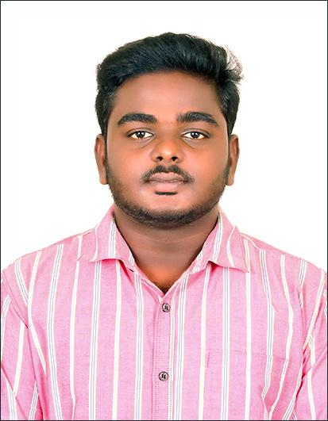
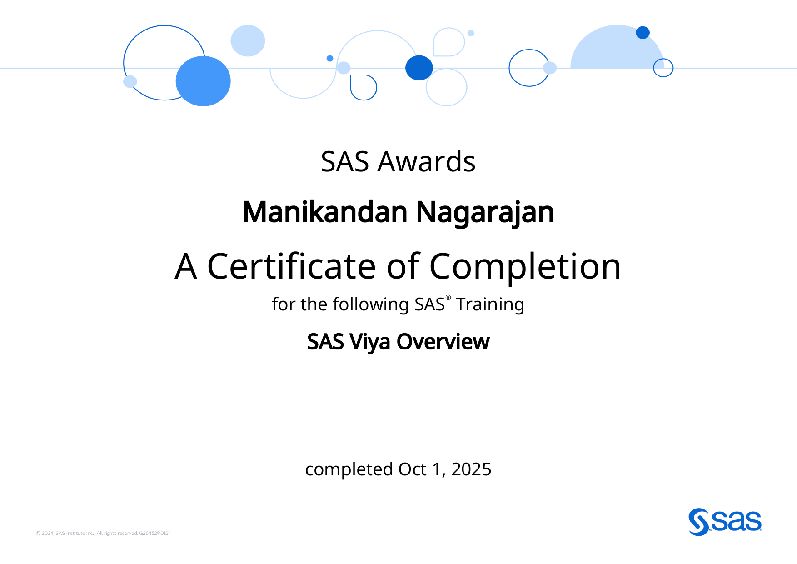
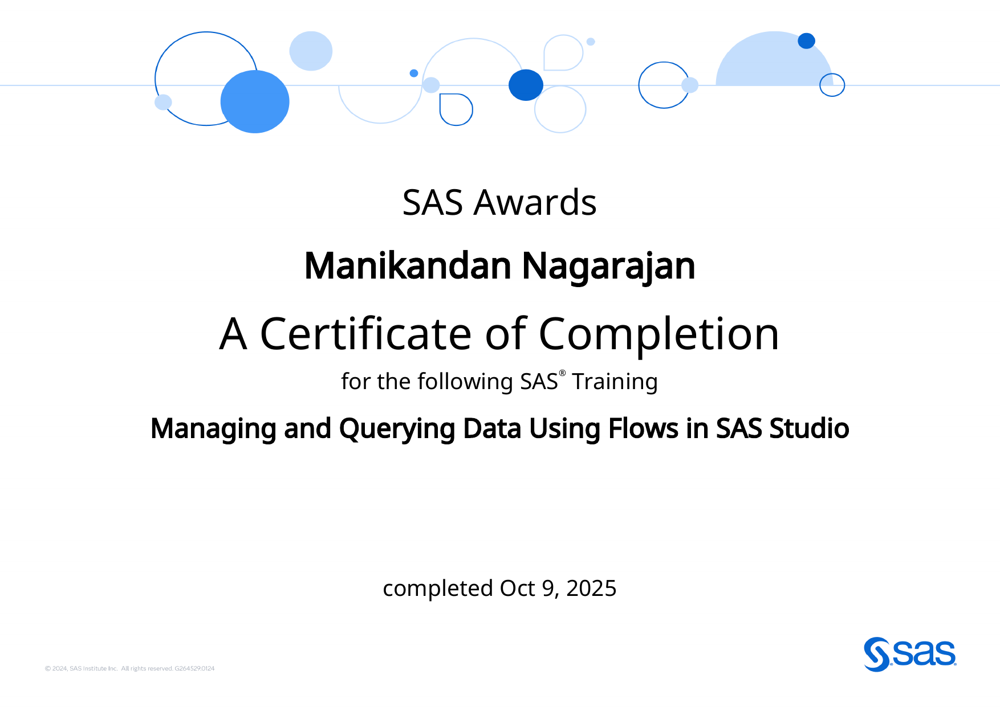
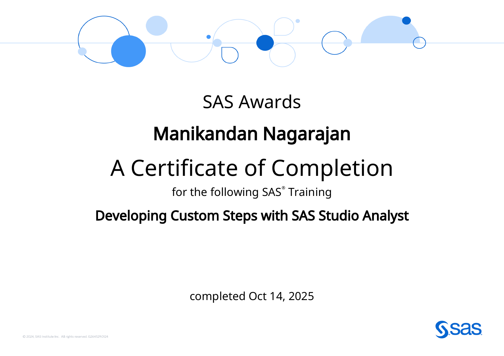
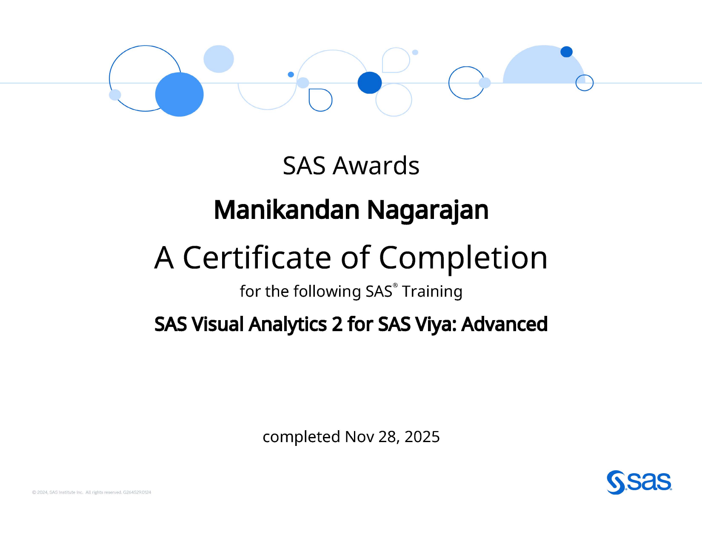
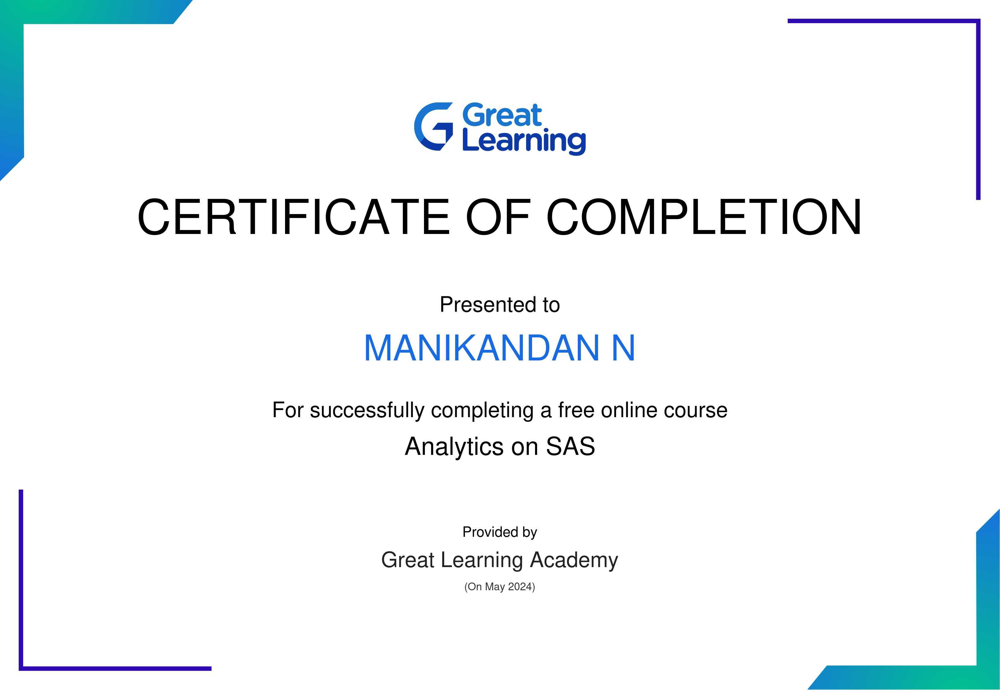
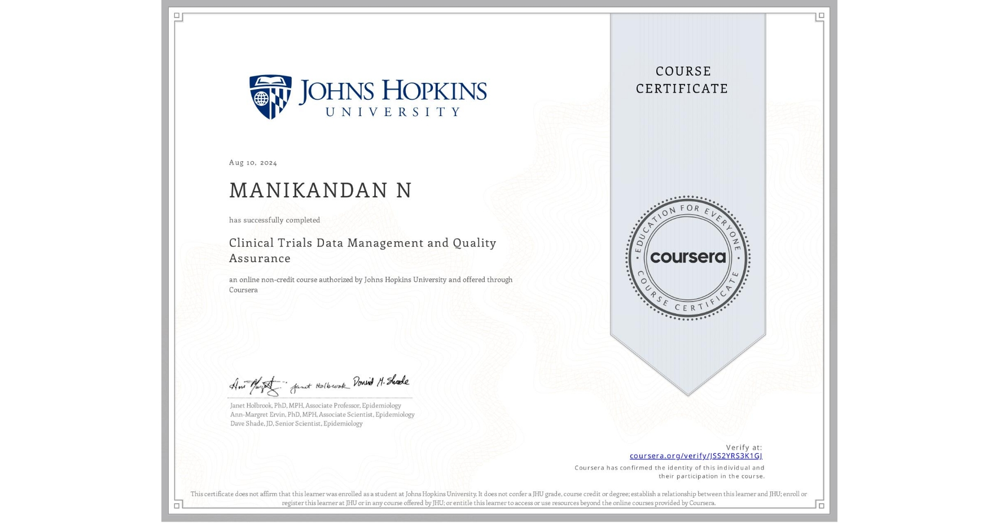
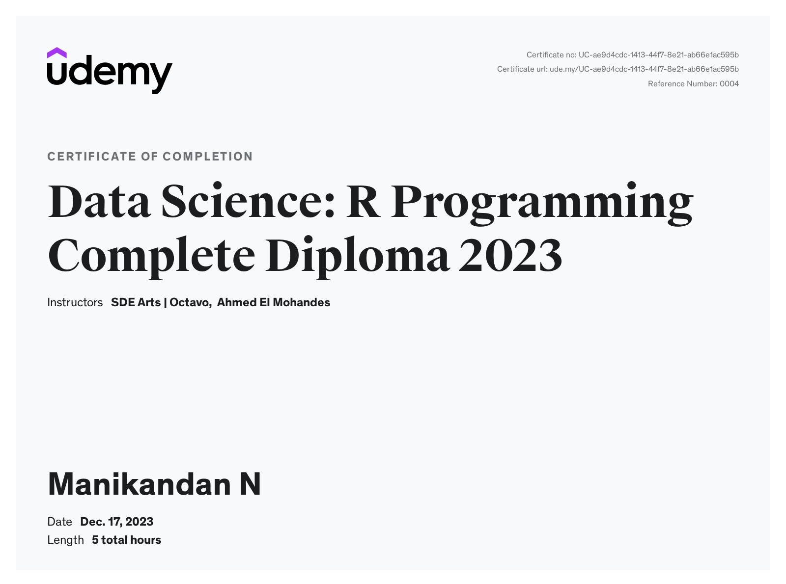
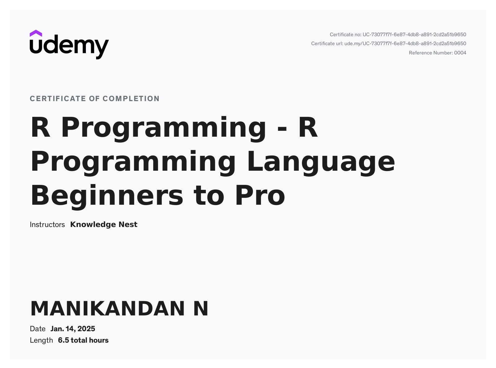
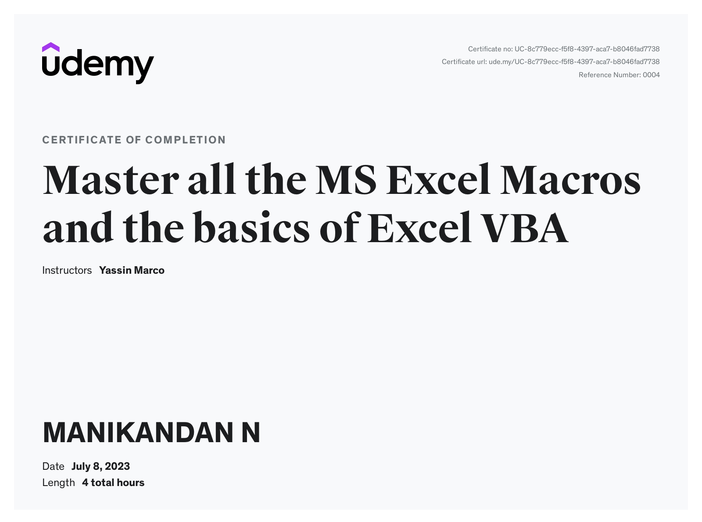

Download my resume to learn more about my experience, skills, and achievements in biostatistics and clinical research.
☏ +91 77088 16384
Experience
- Represent Biostatistics in project discussions and sponsor meetings, ensuring statistical compliance with protocol and regulatory requirements.
- Own statistical deliverables across the project lifecycle — from study start-up through SAP authoring and mock-up shells for tables, listings and figures.
- Run PK analyses across multiple study designs using Phoenix WinNonlin and SAS; apply methods spanning t-test, ANOVA, Wilcoxon, Kruskal–Wallis, Chi-square, Cochran–Mantel–Haenszel, Log-Rank and Cox PH.
- Develop and validate SAS programs for efficacy, safety and PK analyses, including TLF generation and QC review for regulatory-compliant outputs.
- Manage and coordinate biostatistics and programming teams to hit project milestones, and independently review team deliverables for quality.
- Work across Oncology, Dermatology, Ophthalmology and Diabetes therapeutic areas.
- Generated randomisation schemes and sample size calculations for clinical studies using SAS.
- Analysed pharmacokinetic parameters using Phoenix WinNonlin and SAS; prepared and reviewed PK and statistical reports and SOPs.
- Created and validated CDISC SDTM and ADaM datasets, mapping domains with Phoenix WinNonlin against the Annotated CRF.
- Generated TLFs from SDTM/ADaM datasets using SAS and prepared SDTM/ADaM terminology.
- Coordinated with protocol teams on protocol design and SAP development, and verified protocol deviations.
Education
Skills
Projects — Oncology
Authored the Statistical Analysis Plan and built mock-up shells for tables, listings, and figures for a Phase II solid-tumor study, defining efficacy endpoints (ORR, PFS, OS) and the survival-analysis approach ahead of database lock.
Built and validated ADTTE and supporting ADaM datasets for a PFS/OS endpoint in an oncology trial, mapping SDTM domains against the annotated CRF and clearing Pinnacle 21 validation ahead of submission.
Generated a stratified randomisation scheme across multiple treatment arms, balancing key prognostic factors, and coordinated with the protocol team on the design during SAP development.
Delivered the statistical sections of a Clinical Study Report and supported regulatory query responses for an oncology submission, with QC-reviewed outputs contributing to zero critical audit findings.
Implemented MMRM alongside multiple-imputation sensitivity analyses (PROC MI / PROC MIANALYZE) for a longitudinal oncology efficacy endpoint, comparing estimator robustness under different missingness assumptions per the estimand framework.
Note: project details are illustrative of methodology and scope — sponsor and protocol-identifying information is withheld per confidentiality obligations.
Certifications
Certifications earned across clinical biostatistics, SAS Viya analytics, CDISC standards, and statistical programming.
◎ View verified badges on Credly ↗








- ICH GCP R3 ExpectationsEMA/WHO Inspector
- Clinical Trial Randomisation & Sample Size CalculationISCR